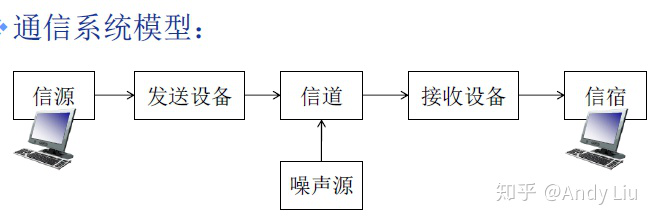
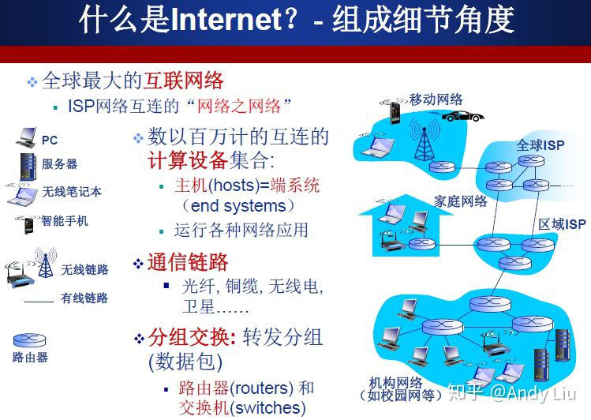
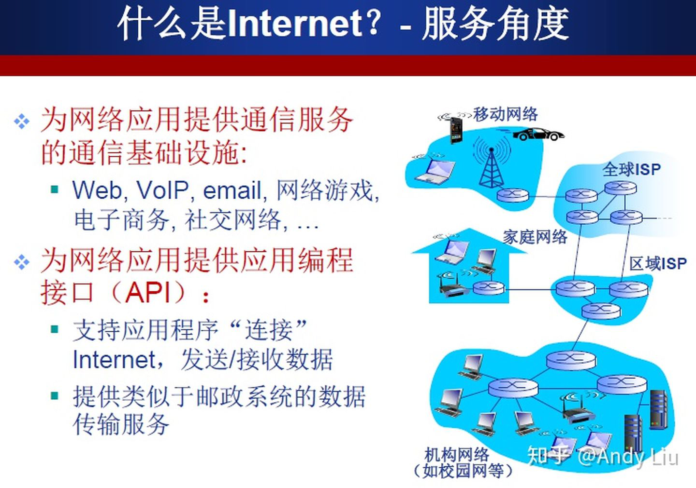
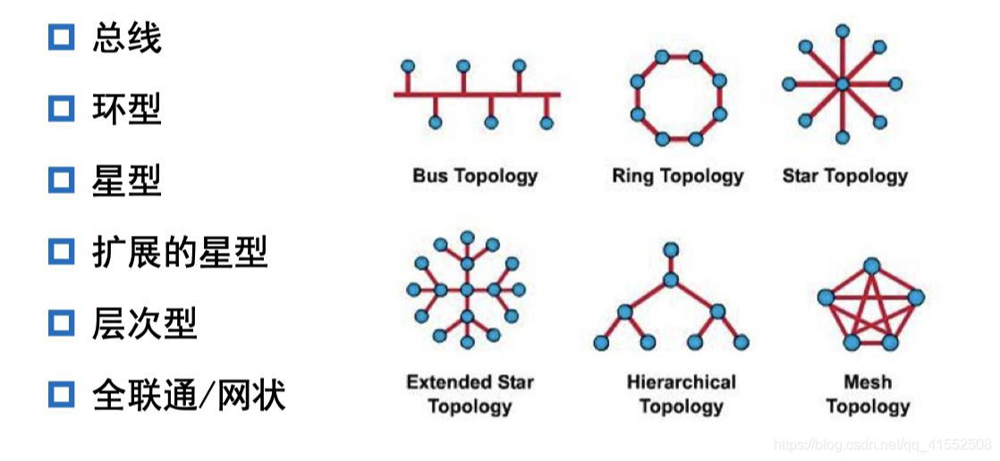

网络神经的组成成分
1.计算机网络基本概念
计算机网络是通信技术与计算机技术紧密集合的产物。
计算机网络就是一种通信网络，是互连的（互联互通，通过通信链路）、自治（无主从关系）的计算机集合。
主机距离很远，通信链路不起作用；通过交换网络互联主机，主机连接到交换节点（路由器/交换机）来完成互连。
 2.网络协议
计算机网络中的数据交换必须遵守事先约定好的规则。计算机网络的所有通信过程都必须遵守某些规则，即协议。
网络协议（network protocol）规定了通信实体之间所交换的消息的格式、意义、顺序以及针对收到信息或发生的时间所采取的动作（actions）。
协议的三要素：
(1)语法（syntax）：数据与控制信息的结构或格式
(2)语义（semantics）：需要发出何种控制信息，完成何种动作/做出何种响应
(3)时序（timing）：事件顺序，速度匹配
协议规范了网络中所有信息发送和接收的过程，比如TCP、IP、HTTP......
协议标准：RFC文档。
3.拓扑 (Topology)
信道 (信号的通道) 的分布方式。常见的拓扑结构：总线型、星型、环型、树型和网状。
最常见的拓扑方式是总线拓扑和星型拓扑。(以太网的两种拓扑方式):
(1)总线拓扑：主机挂接在总线上，相互直接通达。从主机上发出的信号在总线上双向同时传输。所有的主机都可收到这个信号。
(2)星型拓扑：主机都挂接在一个中心节点上。早期中心节点由集线器充当，现在的中心节点主要由交换机充当。其缺点是容易单点故障。
